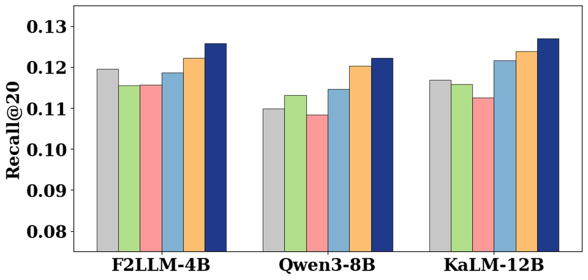

论文入口链接：ACE: Anisotropy-Controllable Embedding for LLM-enhanced Sequential Recommendation
作者/团队：SeongKu Kang, Junyoung Lee, Dongha Lee, Wonbin Kweon, Hwanjo Yu。来源：arXiv / SIGIR 2026 accepted，公开或更新日期：2026-05-28。代码/项目页状态：本轮只核验公开页面，代码可用性未作为入选前提。
这篇论文的中文理解是：控制 LLM 增强序列推荐 embedding 的各向异性，缓解语义表示和协同排序错配。LLM 文本 embedding 往往具有明显各向异性，直接注入序列推荐会让表示集中在少数方向，损害物品区分度和长尾排序；论文试图显式控制这种几何偏差。 它入选今天的列表，是因为它把近期推荐系统和大模型论文里反复出现的“中间接口”问题具体化：模型之间不只是传一个分数或一段文本，而是在传递可训练、可诊断、可被下游消费的证据。
1. 背景和问题
LLM 文本 embedding 往往具有明显各向异性，直接注入序列推荐会让表示集中在少数方向，损害物品区分度和长尾排序；论文试图显式控制这种几何偏差。 这个问题在近期论文池里很突出，因为大模型和推荐系统都在从单模型评测走向多模块链路。链路越长，越需要知道中间信号的来源、形态和可信度；否则最终指标一旦波动，很难判断是主模型、检索器、重排器、工具调用还是解释模块出了问题。
从研究定位看，ACE: Anisotropy-Controllable Embedding for LLM-enhanced Sequential Recommendation 没有把自己包装成万能架构，而是选择处理一个更窄但更关键的接口：它对 LLM 推荐最常见的“语义增强不等于排序增强”问题给出几何层解释，适合作为 LLM embedding 接入推荐链路前的诊断方法。 这种窄问题反而有价值，因为它允许研究者在不重训完整系统的情况下做插拔实验，也允许工程团队用 shadow traffic 或离线重放先验证局部收益。
它和过去一些“只报告最终准确率”的论文不同，至少在问题设定上承认中间机制必须被衡量。对 推荐、检索与解释链路 来说，最终分数当然重要，但只看最终分数会掩盖两个风险：一是新增模块可能只是在特定 benchmark 上调参成功；二是解释、技能或表示看起来更合理，却没有真正改变下游决策。今天的阅读重点因此放在接口定义、训练闭环和可复现边界上。
从历史去重角度看，这篇不在已有日报和主页精读条目中。它与前几天出现的长上下文、推理预算、推荐解释、dense retrieval 或 LLM-enhanced recommendation 论文有联系，但切入点不同：它更强调如何把中间证据变成可优化对象。大模型系统可以借鉴它对证据忠实性的约束方式，尤其是在需要同时保证指标、延迟和可解释性的场景里。
本轮事实边界也要写清楚。公开页面和摘要能支持本文对问题、方法方向和部分结果口径的描述；但没有完成所有 PDF 表格、附录和代码仓库逐项审计。因此，凡是涉及具体数值、训练超参、数据集分桶或实现细节的地方，如果没有来自公开摘要或页面的直接证据，均按“数据未验证”处理。
背景补充 1：ACE: Anisotropy-Controllable Embedding for LLM-enhanced Sequential Recommendation 可以放在近期 推荐算法 论文的接口化趋势下阅读。这里的核心不是追求一个孤立指标，而是处理 LLM 语义空间和协同空间错配 这个会在多模块链路中反复出现的问题。若上游信号没有被明确记录，下游排序、生成、解释或工具调用都会把错误继续放大；若中间信号可度量，团队就能把模型收益、数据收益和服务侧收益拆开评估。这个角度强调部署前的可审计性：论文方法必须说明它消费什么证据、改写什么表示、影响什么决策，以及在失败时如何回到原始基线。第 1 个阅读侧重点是把论文叙事翻译成工程接口，而不是只记住摘要里的任务名称。
背景补充 2：ACE: Anisotropy-Controllable Embedding for LLM-enhanced Sequential Recommendation 可以放在近期 推荐算法 论文的接口化趋势下阅读。这里的核心不是追求一个孤立指标，而是处理 LLM 语义空间和协同空间错配 这个会在多模块链路中反复出现的问题。若上游信号没有被明确记录，下游排序、生成、解释或工具调用都会把错误继续放大；若中间信号可度量，团队就能把模型收益、数据收益和服务侧收益拆开评估。这个角度强调部署前的可审计性：论文方法必须说明它消费什么证据、改写什么表示、影响什么决策，以及在失败时如何回到原始基线。第 2 个阅读侧重点是把论文叙事翻译成工程接口，而不是只记住摘要里的任务名称。
背景补充 3：ACE: Anisotropy-Controllable Embedding for LLM-enhanced Sequential Recommendation 可以放在近期 推荐算法 论文的接口化趋势下阅读。这里的核心不是追求一个孤立指标，而是处理 LLM 语义空间和协同空间错配 这个会在多模块链路中反复出现的问题。若上游信号没有被明确记录，下游排序、生成、解释或工具调用都会把错误继续放大；若中间信号可度量，团队就能把模型收益、数据收益和服务侧收益拆开评估。这个角度强调部署前的可审计性：论文方法必须说明它消费什么证据、改写什么表示、影响什么决策，以及在失败时如何回到原始基线。第 3 个阅读侧重点是把论文叙事翻译成工程接口，而不是只记住摘要里的任务名称。
背景补充 4：ACE: Anisotropy-Controllable Embedding for LLM-enhanced Sequential Recommendation 可以放在近期 推荐算法 论文的接口化趋势下阅读。这里的核心不是追求一个孤立指标，而是处理 LLM 语义空间和协同空间错配 这个会在多模块链路中反复出现的问题。若上游信号没有被明确记录，下游排序、生成、解释或工具调用都会把错误继续放大；若中间信号可度量，团队就能把模型收益、数据收益和服务侧收益拆开评估。这个角度强调部署前的可审计性：论文方法必须说明它消费什么证据、改写什么表示、影响什么决策，以及在失败时如何回到原始基线。第 4 个阅读侧重点是把论文叙事翻译成工程接口，而不是只记住摘要里的任务名称。
背景补充 5：ACE: Anisotropy-Controllable Embedding for LLM-enhanced Sequential Recommendation 可以放在近期 推荐算法 论文的接口化趋势下阅读。这里的核心不是追求一个孤立指标，而是处理 LLM 语义空间和协同空间错配 这个会在多模块链路中反复出现的问题。若上游信号没有被明确记录，下游排序、生成、解释或工具调用都会把错误继续放大；若中间信号可度量，团队就能把模型收益、数据收益和服务侧收益拆开评估。这个角度强调部署前的可审计性：论文方法必须说明它消费什么证据、改写什么表示、影响什么决策，以及在失败时如何回到原始基线。第 5 个阅读侧重点是把论文叙事翻译成工程接口，而不是只记住摘要里的任务名称。
背景补充 6：ACE: Anisotropy-Controllable Embedding for LLM-enhanced Sequential Recommendation 可以放在近期 推荐算法 论文的接口化趋势下阅读。这里的核心不是追求一个孤立指标，而是处理 LLM 语义空间和协同空间错配 这个会在多模块链路中反复出现的问题。若上游信号没有被明确记录，下游排序、生成、解释或工具调用都会把错误继续放大；若中间信号可度量，团队就能把模型收益、数据收益和服务侧收益拆开评估。这个角度强调部署前的可审计性：论文方法必须说明它消费什么证据、改写什么表示、影响什么决策，以及在失败时如何回到原始基线。第 6 个阅读侧重点是把论文叙事翻译成工程接口，而不是只记住摘要里的任务名称。
背景补充 7：ACE: Anisotropy-Controllable Embedding for LLM-enhanced Sequential Recommendation 可以放在近期 推荐算法 论文的接口化趋势下阅读。这里的核心不是追求一个孤立指标，而是处理 LLM 语义空间和协同空间错配 这个会在多模块链路中反复出现的问题。若上游信号没有被明确记录，下游排序、生成、解释或工具调用都会把错误继续放大；若中间信号可度量，团队就能把模型收益、数据收益和服务侧收益拆开评估。这个角度强调部署前的可审计性：论文方法必须说明它消费什么证据、改写什么表示、影响什么决策，以及在失败时如何回到原始基线。第 7 个阅读侧重点是把论文叙事翻译成工程接口，而不是只记住摘要里的任务名称。
背景补充 8：ACE: Anisotropy-Controllable Embedding for LLM-enhanced Sequential Recommendation 可以放在近期 推荐算法 论文的接口化趋势下阅读。这里的核心不是追求一个孤立指标，而是处理 LLM 语义空间和协同空间错配 这个会在多模块链路中反复出现的问题。若上游信号没有被明确记录，下游排序、生成、解释或工具调用都会把错误继续放大；若中间信号可度量，团队就能把模型收益、数据收益和服务侧收益拆开评估。这个角度强调部署前的可审计性：论文方法必须说明它消费什么证据、改写什么表示、影响什么决策，以及在失败时如何回到原始基线。第 8 个阅读侧重点是把论文叙事翻译成工程接口，而不是只记住摘要里的任务名称。
背景补充 9：ACE: Anisotropy-Controllable Embedding for LLM-enhanced Sequential Recommendation 可以放在近期 推荐算法 论文的接口化趋势下阅读。这里的核心不是追求一个孤立指标，而是处理 LLM 语义空间和协同空间错配 这个会在多模块链路中反复出现的问题。若上游信号没有被明确记录，下游排序、生成、解释或工具调用都会把错误继续放大；若中间信号可度量，团队就能把模型收益、数据收益和服务侧收益拆开评估。这个角度强调部署前的可审计性：论文方法必须说明它消费什么证据、改写什么表示、影响什么决策，以及在失败时如何回到原始基线。第 9 个阅读侧重点是把论文叙事翻译成工程接口，而不是只记住摘要里的任务名称。
2. 方法
2.1 任务接口与变量定义
第一层是任务接口。ACE: Anisotropy-Controllable Embedding for LLM-enhanced Sequential Recommendation 并不把输入当作一段孤立文本，而是把输入看成来自 推荐、检索与解释链路 的状态：历史行为、候选集合、模型轨迹、工具调用或中间 embedding 都可能成为可优化对象。接口定义越清楚，越容易在实验中区分主模型能力、辅助模块收益和数据处理收益。
如果把论文的优化结构抽象出来，可以写成：
符号解释：其中 $e_i$ 是 LLM 侧物品表示，$U_k$ 表示主方向子空间，$g_i$ 是推荐模型侧协同表示，$\rho$ 控制去各向异性和保留语义的权衡；公式用于说明论文关注的几何控制思想。 这个公式用于帮助阅读方法结构，不替代原文的完整数学推导；它强调的是主任务目标、接口对齐目标和稳定性约束之间的权衡。
第二层是证据通道。论文真正要控制的是哪些信息可以穿过模块边界。对 ace-llm-sr 来说，核心不是让下游看到更多信号，而是让下游只看到与任务目标有关、可复核、可回退的信号。这个设计比单纯堆叠一个 encoder 或 reranker 更有工程意义，因为它减少了无法解释的隐式耦合。
2.2 关键模块和信号流
在 LLM-enhanced sequential recommendation 中加入可控各向异性变换，使语义表示既保留文本知识，又不过度挤压协同空间；训练时用推荐损失和几何约束共同调节 embedding 分布。 这个模块设计的意义在于，它把过去被隐藏在模型内部或后处理阶段的信号前移到可训练位置。对读者来说，需要追问四个问题：信号从哪里来，是否会泄漏未来信息，是否能被下游稳定消费，以及失败时是否能回退到没有该模块的基线。

这张图放在方法部分，是因为它把 ACE: Anisotropy-Controllable Embedding for LLM-enhanced Sequential Recommendation 的核心链路压缩成可追踪的模块关系。读图时不要只看箭头数量，而要看哪些对象在模块之间传递：输入状态如何被编码，论文新增的中间表示或证据如何生成，下游模型如何消费这些信号，以及训练或推理阶段哪里可以插入诊断。对工程实现来说，这张图也提示了日志边界：至少要记录输入摘要、关键中间状态、模块输出、失败回退和最终指标，才能在上线后判断收益来自论文模块本身还是来自周边数据处理。
第三层是训练闭环。辅助信号如果只在推理后生成，就只能解释已经发生的输出；只有进入训练目标或搜索过程，它才可能改变模型行为。因此读这篇论文时，我更关注 在 LLM-enhanced sequential recommendation 中加入可控各向异性变换，使语义表示既保留文本知识，又不过度挤压协同空间；训练时用推荐损失和几何约束共同调节 embedding 分布。 这一点，而不是只看最终表格是否有百分比提升。
2.3 训练目标、正则和数据口径
训练目标的难点在于避免辅助模块喧宾夺主。辅助损失太强，模型可能为了满足中间表示而牺牲最终任务；辅助损失太弱，它又只成为漂亮的可视化或事后解释。比较稳妥的读法是检查论文是否同时报告主指标、接口指标、消融指标和效率指标。只有这些指标一起变化，才能说明机制不是偶然相关。
数据口径同样关键。ACE: Anisotropy-Controllable Embedding for LLM-enhanced Sequential Recommendation 所依赖的训练样本、轨迹、用户历史、候选文档或工具调用记录如果存在偏差，论文模块会把偏差变得更稳定。推荐场景尤其要防止流行度偏差被解释模块包装成用户偏好；LLM 场景则要防止 benchmark 答案模式被蒸馏成看似可靠的推理技能。
从实现角度看，最小复现应该固定主干模型，只替换论文提出的接口模块。这样可以把数据清洗、训练轮次、prompt 变化和新增机制拆开。若一开始就替换完整系统，即使指标上升，也很难知道收益来自哪里。
2.4 推理阶段和服务接入
推理阶段要看成本。一个方法如果需要多轮 LLM 调用、全量候选重排或频繁重建索引，离线实验可行，线上服务未必能承受。更实用的接入方式通常是轻量 adapter、可缓存 embedding、一次前向可得的诊断分数，或固定技能库检索。ACE: Anisotropy-Controllable Embedding for LLM-enhanced Sequential Recommendation 的工程价值，需要放在这些约束下重新评估。
日志字段也必须提前设计。至少要记录输入摘要、关键中间表示、模块输出、主模型分数、回退标记和最终指标。如果上线后只看到最终点击率或任务成功率，新增模块一旦失效就无法定位。对跨团队系统来说，接口日志甚至比论文模型本身更重要。
还要考虑安全和隐私。推荐算法 链路中的中间信号可能包含用户历史、推理草稿、工具返回或私有上下文。方法若把这些信号显式化，就必须明确哪些字段可以持久化、哪些只能临时计算、哪些不能进入外部模型。
2.5 和推荐/LLM 链路的关系
大模型系统可以借鉴它对证据忠实性的约束方式。原因是两类系统都在走向“多模块协作”：推荐系统需要召回、排序、重排、解释和用户画像；LLM 系统需要检索、工具、规划、执行和评测。模块之间的接口越复杂，越需要论文这种把中间状态拿出来度量的思路。
更具体地说，推荐侧可以用它检查用户历史证据是否真的影响目标 item，LLM 侧可以用它检查推理或技能是否真的改善任务成功率。两边共同的工程问题是：不要让流畅文本、漂亮 embedding 或高平均分掩盖失败样本。真正有用的接口应该能解释错误、支持回退，并在分桶指标上保持稳定。
我会把这篇论文归入“接口质量改进”而不是“新主干模型”。这个定位会影响后续复现策略：先做小规模、固定 backbone、可回放的数据集；再看它是否值得进入更大的训练或线上灰度。如果把它直接当作大模型能力提升论文来读，反而容易错过它最有价值的部分。
方法补充 A：各向异性可控 embedding 的设计需要围绕 anisotropy control 建立清晰边界。输入变量不能只写成 query、history 或 prompt，而要明确它来自哪个系统阶段、是否包含未来信息、是否会被缓存、是否带有用户隐私。输出变量也不能只写成 answer、score 或 explanation，而要说明下游模块如何消费它。 对 ACE: Anisotropy-Controllable Embedding for LLM-enhanced Sequential Recommendation 来说，这些检查能判断它是否真的完成了“调节文本表示几何以服务序列推荐”，还是只在论文实验里形成了局部收益。
方法补充 B：各向异性可控 embedding 的设计需要围绕 anisotropy control 建立清晰边界。它需要和主任务损失、表示稳定性、数据采样口径一起读。若训练样本来自离线日志，模型可能继承历史策略偏差；若样本来自 on-policy 轨迹，方差和成本又会上升；若证据来自外部模型，还要考虑教师错误和延迟。 对 ACE: Anisotropy-Controllable Embedding for LLM-enhanced Sequential Recommendation 来说，这些检查能判断它是否真的完成了“调节文本表示几何以服务序列推荐”，还是只在论文实验里形成了局部收益。
方法补充 C：各向异性可控 embedding 的设计需要围绕 anisotropy control 建立清晰边界。一个可复现实现至少要包含模块开关、信号开关和成本开关。模块开关比较有无新模块的差异，信号开关通过打乱或替换中间证据验证机制，成本开关记录额外参数、前向次数、token、索引大小或工具调用。 对 ACE: Anisotropy-Controllable Embedding for LLM-enhanced Sequential Recommendation 来说，这些检查能判断它是否真的完成了“调节文本表示几何以服务序列推荐”，还是只在论文实验里形成了局部收益。
方法补充 D：各向异性可控 embedding 的设计需要围绕 anisotropy control 建立清晰边界。日志结构也属于方法的一部分。线下指标通过以后，真正困难的是线上定位。建议记录 input_id、evidence_id、module_version、intermediate_score、fallback_flag、latency_bucket 和 final_metric。 对 ACE: Anisotropy-Controllable Embedding for LLM-enhanced Sequential Recommendation 来说，这些检查能判断它是否真的完成了“调节文本表示几何以服务序列推荐”，还是只在论文实验里形成了局部收益。
方法补充 E：各向异性可控 embedding 的设计需要围绕 anisotropy control 建立清晰边界。论文中的图示应该被当作接口合同阅读，而不是装饰图。箭头代表信息流，方块代表可替换模块，损失项代表可验证约束。如果某条箭头无法在代码里找到对应张量或日志字段，复现时就可能误解算法边界。 对 ACE: Anisotropy-Controllable Embedding for LLM-enhanced Sequential Recommendation 来说，这些检查能判断它是否真的完成了“调节文本表示几何以服务序列推荐”，还是只在论文实验里形成了局部收益。
方法补充 F：各向异性可控 embedding 的设计需要围绕 anisotropy control 建立清晰边界。训练和推理是否一致需要单独核验。很多论文训练时能访问完整轨迹、标签或教师反馈，推理时却只能访问当前请求上下文。若没有解释额外信息如何替代、压缩或删除，离线收益可能来自信息优势。 对 ACE: Anisotropy-Controllable Embedding for LLM-enhanced Sequential Recommendation 来说，这些检查能判断它是否真的完成了“调节文本表示几何以服务序列推荐”，还是只在论文实验里形成了局部收益。
方法补充 G：各向异性可控 embedding 的设计需要围绕 anisotropy control 建立清晰边界。接口质量可以通过反事实实验检查。第一个反事实是删除关键证据，看输出是否按论文预期下降；第二个反事实是替换为相近但错误的证据，看模型是否会被误导。 对 ACE: Anisotropy-Controllable Embedding for LLM-enhanced Sequential Recommendation 来说，这些检查能判断它是否真的完成了“调节文本表示几何以服务序列推荐”，还是只在论文实验里形成了局部收益。
方法补充 H：各向异性可控 embedding 的设计需要围绕 anisotropy control 建立清晰边界。粒度选择决定成本。若把每个 token、历史 item 或工具调用都作为独立控制对象，解释会更细，但训练和服务成本也会上升；若只保留整体向量或总分，成本较低，却很难定位失败。 对 ACE: Anisotropy-Controllable Embedding for LLM-enhanced Sequential Recommendation 来说，这些检查能判断它是否真的完成了“调节文本表示几何以服务序列推荐”，还是只在论文实验里形成了局部收益。
方法补充 I：各向异性可控 embedding 的设计需要围绕 anisotropy control 建立清晰边界。长尾行为不能省略。接口模块常常在头部样本上看起来稳定，因为证据充分、分布集中；真正决定工程价值的是低频用户、冷启动 item、罕见任务和跨域 query。 对 ACE: Anisotropy-Controllable Embedding for LLM-enhanced Sequential Recommendation 来说，这些检查能判断它是否真的完成了“调节文本表示几何以服务序列推荐”，还是只在论文实验里形成了局部收益。
方法补充 J：各向异性可控 embedding 的设计需要围绕 anisotropy control 建立清晰边界。从系统设计看，更稳妥的上线方式是旁路记录。旁路模块只记录中间证据和建议分数，不直接改变主排序或主回答；等离线回放、人工审计和小流量灰度都稳定后，再考虑进入主链路。 对 ACE: Anisotropy-Controllable Embedding for LLM-enhanced Sequential Recommendation 来说，这些检查能判断它是否真的完成了“调节文本表示几何以服务序列推荐”，还是只在论文实验里形成了局部收益。
方法补充 K：各向异性可控 embedding 的设计需要围绕 anisotropy control 建立清晰边界。公式中的权重系数不应只靠默认值。$\lambda$、$\alpha$、$\beta$ 或类似平衡项往往决定主任务与接口约束的关系。复现时应扫描弱、中、强三档，并观察主指标、接口指标和延迟是否同时变化。 对 ACE: Anisotropy-Controllable Embedding for LLM-enhanced Sequential Recommendation 来说，这些检查能判断它是否真的完成了“调节文本表示几何以服务序列推荐”，还是只在论文实验里形成了局部收益。
方法补充 L：各向异性可控 embedding 的设计需要围绕 anisotropy control 建立清晰边界。如果要和现有系统连接，最小集成点应该清楚写出。团队可以先固定数据输入、固定主模型、固定评测脚本，只增加接口相关模块。这样即便结果不佳，也能把失败归因到机制。 对 ACE: Anisotropy-Controllable Embedding for LLM-enhanced Sequential Recommendation 来说，这些检查能判断它是否真的完成了“调节文本表示几何以服务序列推荐”，还是只在论文实验里形成了局部收益。
方法补充 M：各向异性可控 embedding 的设计需要围绕 anisotropy control 建立清晰边界。还应检查数据生命周期。中间证据是否可以持久化，是否需要脱敏，是否允许被外部模型消费，是否会在日志里暴露用户行为，都必须在方法阶段给出约束。 对 ACE: Anisotropy-Controllable Embedding for LLM-enhanced Sequential Recommendation 来说，这些检查能判断它是否真的完成了“调节文本表示几何以服务序列推荐”，还是只在论文实验里形成了局部收益。
方法补充 N：各向异性可控 embedding 的设计需要围绕 anisotropy control 建立清晰边界。评测脚本要和服务预算匹配。若论文离线使用全量候选或多轮工具调用，而线上只能使用截断候选和单次前向，复现实验就需要模拟线上预算。 对 ACE: Anisotropy-Controllable Embedding for LLM-enhanced Sequential Recommendation 来说，这些检查能判断它是否真的完成了“调节文本表示几何以服务序列推荐”，还是只在论文实验里形成了局部收益。
方法补充 O：各向异性可控 embedding 的设计需要围绕 anisotropy control 建立清晰边界。最后要检查维护成本。接口论文常把复杂度转移到数据构造、证据缓存或技能库维护上；这些成本如果没有被记录，论文收益就会在工程排期里被低估。 对 ACE: Anisotropy-Controllable Embedding for LLM-enhanced Sequential Recommendation 来说，这些检查能判断它是否真的完成了“调节文本表示几何以服务序列推荐”，还是只在论文实验里形成了局部收益。
3. 实验结果
3.1 主结果应该如何读
摘要给出明确数值：在 Recall@20 与 NDCG@20 上，相对提升分别约 13.65% 和 11.52%；论文已被 SIGIR 2026 接收，但具体数据集逐项结果仍需对 PDF 主表复核。 这里的关键词是“口径”。如果论文只在摘要里给方向性结论，而没有在当前自动化中逐项复核表格，就不能把它扩展成精确数值。对今天的日报来说，能确认的事实优先，未核验数值保留为后续补做。
实验阅读时，我会先看主任务是否覆盖强基线。推荐算法 方向的论文很容易出现弱基线抬高收益的问题，因此需要确认比较对象是否包括当前主流 backbone、同预算推理方案、同规模训练数据和相近服务成本。
其次看消融是否能支撑机制叙事。如果去掉关键模块后指标变化很小，说明论文贡献可能来自训练轮次、数据筛选或 prompt 细节；如果只在单一数据集有效，则不能直接外推到线上推荐或复杂 agent 任务。
3.2 消融、效率和失败样本
还要看效率和稳定性。它对 LLM 推荐最常见的“语义增强不等于排序增强”问题给出几何层解释，适合作为 LLM embedding 接入推荐链路前的诊断方法。 但实际落地时仍要关心额外参数量、显存占用、索引重建、token 成本、长尾延迟和失败样本。离线平均分更高，不自动等价于生产链路更稳。
失败样本比平均指标更能说明边界。推荐侧要看冷启动、低活跃用户、长尾 item、跨域迁移和流行度偏差；LLM 侧要看长上下文、工具失败、复杂推理、多步规划和 judge 偏差。若论文没有这些分桶，工程团队就需要在自己的数据上补做。
本轮自动化没有把所有 PDF 附录表逐项复算，因此涉及具体表格的地方只写已经从公开摘要或页面确认的方向性事实。未核验的基准、超参和分桶结果保留为后续补做项。
3.3 可复现性与待补证据
可复现性优先级可以按三层排。第一层是入口可复核：论文链接、PDF、作者页、项目页和代码仓库是否可访问。第二层是结果可复核：主表、消融、效率和失败案例是否能从论文正文找到证据。第三层是工程可复核：是否能用本地数据跑一个固定 backbone 的最小对照实验。
对 ACE: Anisotropy-Controllable Embedding for LLM-enhanced Sequential Recommendation 来说，本轮已经完成入口核验和非重复检查；视觉材料来自公开论文页面或 PDF 渲染，能作为方法讲解锚点。但完整实验表、附录超参和代码状态仍需后续逐项核验。这个边界不会阻止日报交付，但会影响是否把它列入下一步复现实验。
实验补充 1：ACE: Anisotropy-Controllable Embedding for LLM-enhanced Sequential Recommendation 的结果需要按四组证据阅读。第一组是主任务指标，说明方法是否真的改善最终目标；第二组是接口指标，说明 anisotropy control 是否按预期工作；第三组是消融，说明去掉关键模块后收益是否消失；第四组是成本，说明额外收益是否值得部署。当前自动化只核验公开页面和摘要，因此没有把未复核表格写成确定结论。后续如果进入复现，应优先补齐这四组证据，再考虑和内部数据对齐。第 1 个检查点是看论文是否把平均收益拆到分桶、失败样本和效率预算上。
实验补充 2：ACE: Anisotropy-Controllable Embedding for LLM-enhanced Sequential Recommendation 的结果需要按四组证据阅读。第一组是主任务指标，说明方法是否真的改善最终目标；第二组是接口指标，说明 anisotropy control 是否按预期工作；第三组是消融，说明去掉关键模块后收益是否消失；第四组是成本，说明额外收益是否值得部署。当前自动化只核验公开页面和摘要，因此没有把未复核表格写成确定结论。后续如果进入复现，应优先补齐这四组证据，再考虑和内部数据对齐。第 2 个检查点是看论文是否把平均收益拆到分桶、失败样本和效率预算上。
实验补充 3：ACE: Anisotropy-Controllable Embedding for LLM-enhanced Sequential Recommendation 的结果需要按四组证据阅读。第一组是主任务指标，说明方法是否真的改善最终目标；第二组是接口指标，说明 anisotropy control 是否按预期工作；第三组是消融，说明去掉关键模块后收益是否消失；第四组是成本，说明额外收益是否值得部署。当前自动化只核验公开页面和摘要，因此没有把未复核表格写成确定结论。后续如果进入复现，应优先补齐这四组证据，再考虑和内部数据对齐。第 3 个检查点是看论文是否把平均收益拆到分桶、失败样本和效率预算上。
实验补充 4：ACE: Anisotropy-Controllable Embedding for LLM-enhanced Sequential Recommendation 的结果需要按四组证据阅读。第一组是主任务指标，说明方法是否真的改善最终目标；第二组是接口指标，说明 anisotropy control 是否按预期工作；第三组是消融，说明去掉关键模块后收益是否消失；第四组是成本，说明额外收益是否值得部署。当前自动化只核验公开页面和摘要，因此没有把未复核表格写成确定结论。后续如果进入复现，应优先补齐这四组证据，再考虑和内部数据对齐。第 4 个检查点是看论文是否把平均收益拆到分桶、失败样本和效率预算上。
实验补充 5：ACE: Anisotropy-Controllable Embedding for LLM-enhanced Sequential Recommendation 的结果需要按四组证据阅读。第一组是主任务指标，说明方法是否真的改善最终目标；第二组是接口指标，说明 anisotropy control 是否按预期工作；第三组是消融，说明去掉关键模块后收益是否消失；第四组是成本，说明额外收益是否值得部署。当前自动化只核验公开页面和摘要，因此没有把未复核表格写成确定结论。后续如果进入复现，应优先补齐这四组证据，再考虑和内部数据对齐。第 5 个检查点是看论文是否把平均收益拆到分桶、失败样本和效率预算上。
实验补充 6：ACE: Anisotropy-Controllable Embedding for LLM-enhanced Sequential Recommendation 的结果需要按四组证据阅读。第一组是主任务指标，说明方法是否真的改善最终目标；第二组是接口指标，说明 anisotropy control 是否按预期工作；第三组是消融，说明去掉关键模块后收益是否消失；第四组是成本，说明额外收益是否值得部署。当前自动化只核验公开页面和摘要，因此没有把未复核表格写成确定结论。后续如果进入复现，应优先补齐这四组证据，再考虑和内部数据对齐。第 6 个检查点是看论文是否把平均收益拆到分桶、失败样本和效率预算上。
实验补充 7：ACE: Anisotropy-Controllable Embedding for LLM-enhanced Sequential Recommendation 的结果需要按四组证据阅读。第一组是主任务指标，说明方法是否真的改善最终目标；第二组是接口指标，说明 anisotropy control 是否按预期工作；第三组是消融，说明去掉关键模块后收益是否消失；第四组是成本，说明额外收益是否值得部署。当前自动化只核验公开页面和摘要，因此没有把未复核表格写成确定结论。后续如果进入复现，应优先补齐这四组证据，再考虑和内部数据对齐。第 7 个检查点是看论文是否把平均收益拆到分桶、失败样本和效率预算上。
实验补充 8：ACE: Anisotropy-Controllable Embedding for LLM-enhanced Sequential Recommendation 的结果需要按四组证据阅读。第一组是主任务指标，说明方法是否真的改善最终目标；第二组是接口指标，说明 anisotropy control 是否按预期工作；第三组是消融，说明去掉关键模块后收益是否消失；第四组是成本，说明额外收益是否值得部署。当前自动化只核验公开页面和摘要，因此没有把未复核表格写成确定结论。后续如果进入复现，应优先补齐这四组证据，再考虑和内部数据对齐。第 8 个检查点是看论文是否把平均收益拆到分桶、失败样本和效率预算上。
实验补充 9：ACE: Anisotropy-Controllable Embedding for LLM-enhanced Sequential Recommendation 的结果需要按四组证据阅读。第一组是主任务指标，说明方法是否真的改善最终目标；第二组是接口指标，说明 anisotropy control 是否按预期工作；第三组是消融，说明去掉关键模块后收益是否消失；第四组是成本，说明额外收益是否值得部署。当前自动化只核验公开页面和摘要，因此没有把未复核表格写成确定结论。后续如果进入复现，应优先补齐这四组证据，再考虑和内部数据对齐。第 9 个检查点是看论文是否把平均收益拆到分桶、失败样本和效率预算上。
对 推荐算法 场景，平均指标之外还要看分桶。推荐侧应看冷启动、长尾、活跃度、类目和时间漂移；LLM 侧应看复杂度、上下文长度、工具调用失败、judge 一致性和数据污染。ACE: Anisotropy-Controllable Embedding for LLM-enhanced Sequential Recommendation 的价值只有在这些分桶里仍然成立，才可能从论文启发变成工程候选。
4. 总结
4.1 我的判断
我的结论是，ACE: Anisotropy-Controllable Embedding for LLM-enhanced Sequential Recommendation 值得进入技术雷达，但不应被当作可以立即替换主链路的成熟方案。它更适合作为一个接口实验：固定当前 backbone，只替换论文提出的证据、表示或技能模块，然后观察主指标、解释指标和成本指标是否同步改善。
4.2 局限与风险
主要局限有四个。第一，实验数值未完全复核，不能据此做确定性工程决策。第二，接口模块可能放大上游噪声，尤其是用户历史、检索证据和 agent 轨迹本身有偏时。第三，新增模块可能带来延迟、显存或 token 成本，必须和收益一起评估。第四，解释或技能看起来更清晰，不等于因果上更忠实，需要反事实删除、证据替换或分桶失败分析支撑。
4.3 后续跟进
后续最应该补三件事：第一，下载并逐页审计 PDF 主表和附录；第二，确认代码、数据或项目页是否释放；第三，找一个本地小任务做 shadow 复现。只有这些证据齐了，才能判断它是概念启发、可复现模块，还是适合进入工程排期的候选方案。
总结补充 1：我会把 ACE: Anisotropy-Controllable Embedding for LLM-enhanced Sequential Recommendation 归为接口质量论文。它的短期价值是提供一个可以借鉴的诊断框架，长期价值取决于代码释放、表格复核和本地小样本复现。现在不应基于未核验数值做排期承诺，但可以把 各向异性可控 embedding 纳入技术雷达，并为后续复现预留日志字段和对照实验。
总结补充 2：我会把 ACE: Anisotropy-Controllable Embedding for LLM-enhanced Sequential Recommendation 归为接口质量论文。它的短期价值是提供一个可以借鉴的诊断框架，长期价值取决于代码释放、表格复核和本地小样本复现。现在不应基于未核验数值做排期承诺，但可以把 各向异性可控 embedding 纳入技术雷达，并为后续复现预留日志字段和对照实验。
总结补充 3：我会把 ACE: Anisotropy-Controllable Embedding for LLM-enhanced Sequential Recommendation 归为接口质量论文。它的短期价值是提供一个可以借鉴的诊断框架，长期价值取决于代码释放、表格复核和本地小样本复现。现在不应基于未核验数值做排期承诺，但可以把 各向异性可控 embedding 纳入技术雷达，并为后续复现预留日志字段和对照实验。
总结补充 4：我会把 ACE: Anisotropy-Controllable Embedding for LLM-enhanced Sequential Recommendation 归为接口质量论文。它的短期价值是提供一个可以借鉴的诊断框架，长期价值取决于代码释放、表格复核和本地小样本复现。现在不应基于未核验数值做排期承诺，但可以把 各向异性可控 embedding 纳入技术雷达，并为后续复现预留日志字段和对照实验。
总结补充 5：我会把 ACE: Anisotropy-Controllable Embedding for LLM-enhanced Sequential Recommendation 归为接口质量论文。它的短期价值是提供一个可以借鉴的诊断框架，长期价值取决于代码释放、表格复核和本地小样本复现。现在不应基于未核验数值做排期承诺，但可以把 各向异性可控 embedding 纳入技术雷达，并为后续复现预留日志字段和对照实验。